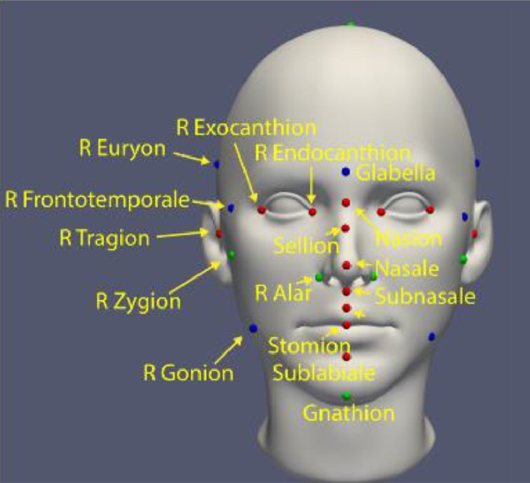

Personalized Longitudinal CT Image Synthesis
Personalized Longitudinal CT Image Synthesis
Paper: Lui, Jiawei et al., "Population-Driven Synthesis of Personalized Cranial Development from Cross-Sectional Pediatric CT Images," IEEE Transactions on Biomedical Engineering, Mar. 2025
Personalized prediction of pathological head development
Paper: Elkhill, Connor et al., "Personalized Phenotype Encoding and Prediction of Pathological Head Development from Cross-Sectional Images," 20th International Symposium on Medical Information Processing and Analysis (SIPAIM), 2024

3D Photogrammetry Landmarking and Head Shape Analysis
Paper: Elkhill, Connor et al., "Geometric learning and statistical modeling for surgical outcomes evaluation in craniosynostosis using 3D photogrammetry," Computer Methods and Programs in Biomedicine, vol. 240, 2023
Cranial Suture Growth for Craniosynostosis Phenotype Prediction
Paper: Liu, Jiawei et al., "Data-driven cranial suture growth model enables predicting phenotypes of craniosynostosis," Sci Rep 13, vol. 20557, Nov. 2023
Joint Cranial Bone Labeling and Landmark Detection
Paper: Liu, Jiawei et al., "Joint Cranial Bone Labeling and Landmark Detection in Pediatric CT Images Using Context Encoding," IEEE Transactions on Medical Imaging, vol. 42, no. 10, pp. 3117-3126, Oct. 2023
 Single-Stage Cranial Bone Labeling and Landmark Localization
Single-Stage Cranial Bone Labeling and Landmark Localization
Paper: Liu, Jiawei et al., "Learning with Context Encoding for Single-Stage Cranial Bone Labeling and Landmark Localization," MICCAI, vol. 13438, pp. 286-296, Sep. 2022
Reference Model of Normative Cranial Bone Development
Paper: Liu, Jiawei et al. "Data-driven Normative Reference of Pediatric Cranial Bone Development," Plastic and reconstructive surgery. Global open vol. 10,8 e4457. 10 Aug. 2022